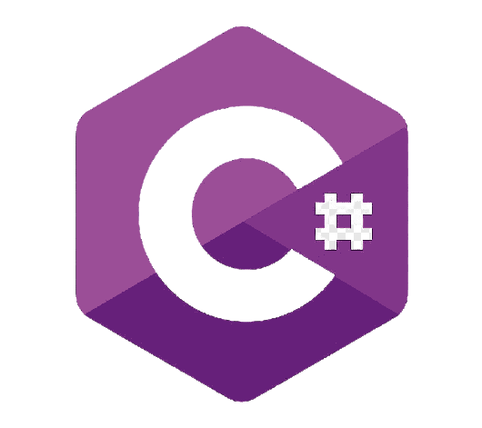
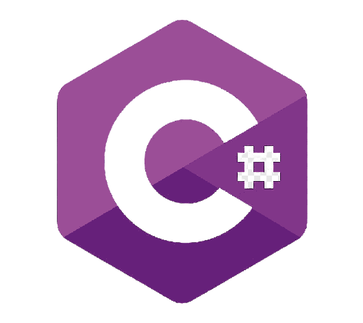

Mis habilidades
HTML
- 📄 HTML es la revisión más reciente del Lenguaje de Marcado de Hipertexto.
Mi experiencia con HTML
- 🧩 Uso de etiquetas semánticas para estructurar contenido de forma accesible.
- 📨 Formularios y validaciones nativas para mejorar la UX.
- 🪟 Implementación de modales para login y carrito de compras.
CSS
- 🎨 CSS permite diseñar interfaces modernas con animaciones y diseños responsivos.
Mi experiencia con CSS
- 📐 Uso avanzado de Flexbox y Grid.
- 🎞️ Animaciones y transiciones suaves para mejorar la interacción.
- 🧵 Trabajo con SASS y LESS para optimizar el código.
- 🌙 Implementación de temas claros/oscuro mediante variables CSS.
JavaScript
- ☕ Lenguaje dinámico para interactividad y lógica de aplicaciones web.
Mi experiencia con JavaScript
- 💾 Autenticación: login, logout, persistencia con
localStorage.
- 🧑💼 Gestión de roles: vistas condicionales para admin y usuario.
- 🛒 Carrito: añadir, eliminar, vaciar, confirmar compra.
- 📦 Fetch API: consumo de endpoints y manejo de errores.
- 🔍 Filtros dinámicos: búsqueda, categoría y precios en tiempo real.
- 🎯 Validación: control de formularios y feedback.
- 🔄 UX dinámica: actualización de DOM y modales interactivos.
React
- ⚛️ React facilita la creación de interfaces reutilizables y eficientes.
Mi experiencia con React
- 🌐 Routing con React Router.
- 🧠 Estado global con Context API y Redux.
- 🧱 Componentes personalizados reutilizables.
- 🔗 Consumo de APIs REST y GraphQL.
- 🚀 Optimización con
memo, useMemo, useCallback.
- 💡Creación de hooks propios para lógica reutilizable.
Node.js
- 🌐 Node.js permite desarrollar aplicaciones escalables en JavaScript del lado del servidor.
Mi experiencia con Node.js
- 🔧 Creación de servidores web con Express.
- 🧾 Desarrollo de APIs REST y GraphQL.
- 💽 Bases de datos SQL y MongoDB.
- 🔐 Autenticación y autorización con JWT.
- ⚙️ Optimización con clustering y técnicas de caché.
- 🌍 Integración con servicios externos vía API.
MySQL
- 🗄️ MySQL es un sistema de gestión de bases de datos relacional muy popular.
Mi experiencia con MySQL
- 📊 Diseño y normalización de bases de datos.
- 🔍 Consultas complejas con JOINs, subconsultas y transacciones.
- 🔒 Seguridad y permisos de usuario.
- 📈 Optimización de consultas y uso de índices.
Python
- 🐍 Python es un lenguaje versátil y fácil de aprender.
Mi experiencia con Python
- 🧩 Desarrollo de scripts y automatización de tareas.
- 🌐 Creación de aplicaciones web con Flask y Django.
- 📊 Análisis de datos con Pandas y NumPy.
- 🤖 Implementación de modelos de Machine Learning con Scikit-learn.
C#
- 💻 C# es un lenguaje orientado a objetos desarrollado por Microsoft.
Mi experiencia con C#
- 🖥️ Desarrollo de aplicaciones de escritorio con Windows Forms y WPF.
- 🌐 Creación de APIs REST con ASP.NET Core.
- 📦 Integración con bases de datos SQL Server.
- 🔒 Implementación de autenticación y autorización.


 
